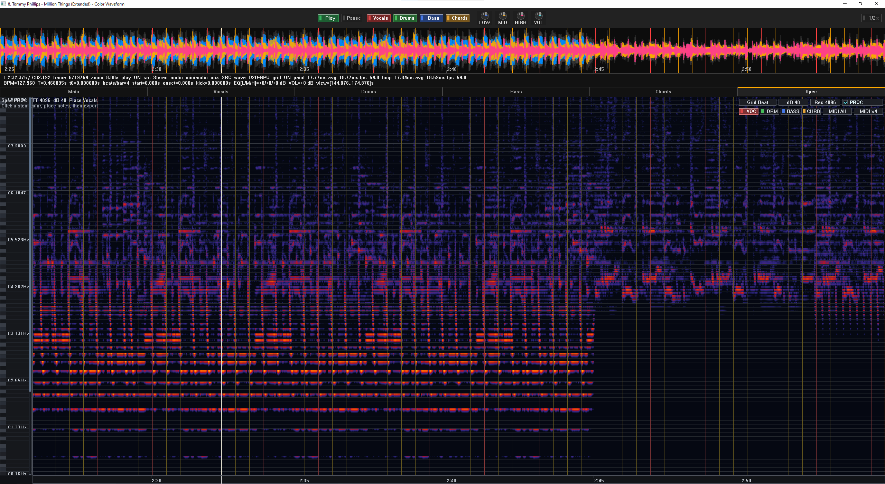

C++ tool for converting recorded audio into MIDI note data through frequency analysis.

Click the image to enlarge it.
This project converts audio recordings into MIDI by identifying the dominant frequencies present in the input signal and mapping them to musical notes. The goal was to build a pipeline that could take an audio file and produce a more structured musical representation that could be edited, analyzed, or reused in other software.
The core of the project is a frequency-analysis workflow written in C++. Audio data is processed frame by frame, the strongest spectral components are identified, and those frequencies are associated with note values in the MIDI output. This makes it possible to translate pitch information from an audio waveform into a symbolic note sequence.
The GUI version shown here made the tool easier to test and iterate on by providing a more direct way to load audio, inspect the conversion process, and review the output. It turned the project from a command-line prototype into something more usable for repeated experiments.